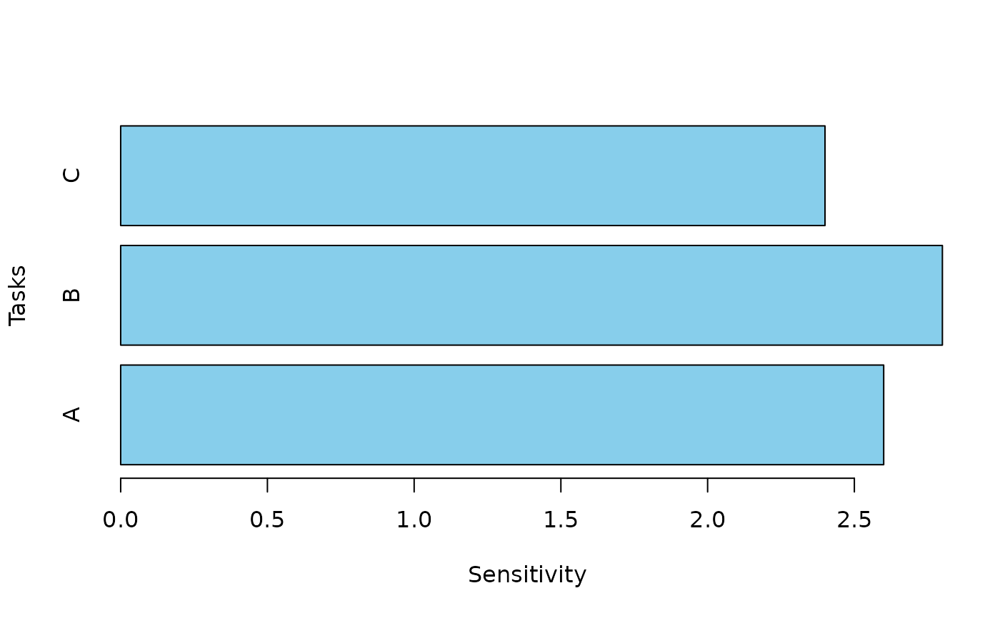

Sensitivity Analysis.
Examples
# Set the task distributions for a toy project.
task_dists <- list(
list(type = "normal", mean = 10, sd = 2), # Task A: Normal distribution
list(type = "triangular", a = 5, b = 15, c = 10), # Task B: Triangular distribution
list(type = "uniform", min = 8, max = 12) # Task C: Uniform distribution
)
# Set the correlation matrix between the tasks.
cor_mat <- matrix(c(
1, 0.5, 0.3,
0.5, 1, 0.4,
0.3, 0.4, 1
), nrow = 3, byrow = TRUE)
# Calculate the sensitivity of each task and print the results
sensitivity_results <- sensitivity(task_dists, cor_mat)
cat("Sensitivity of the variance in total cost with respect to the variance in each task cost:\n")
#> Sensitivity of the variance in total cost with respect to the variance in each task cost:
print(sensitivity_results)
#> [1] 2.6 2.8 2.4
# Build a vertical barchart and display the results.
data <- data.frame(
Tasks = c('A', 'B', 'C'),
Sensitivity = sensitivity_results
)
barplot(height=data$Sensitivity, names=data$Tasks, col='skyblue',
horiz=TRUE, xlab = 'Sensitivity', ylab = 'Tasks')
